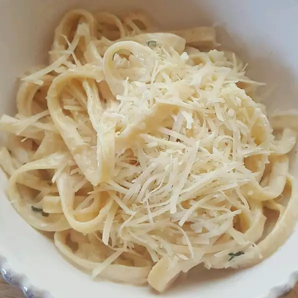

World Famous Fettucine Alfredo

Description:
This creamy, garlicky, smooth Alfredo sauce is the absolute best. You do not want to use a grated Parmesan that you buy on a shelf.
When you cook with that type, your Alfredo goes from a sauce to a gooey mess.
You want to buy a very good and very hard Parmesan cheese in triangle form. Also,
make sure the cream doesn't boil too much or there will not be enough liquid to make the Alfredo sauce smooth.
Ingredients:
- 10 ounces fettuccini pasta
- ½ cup butter
- 5 cloves garlic, chopped
- 1 cup heavy cream
- 1 egg yolk
- 2 cups freshly grated Parmesan cheese
- 2 tablespoons dried parsley
Steps:
- Bring a large pot of lightly salted water to a boil. Add pasta and cook for 8 to 10 minutes or until al dente; drain.
- Meanwhile, in a large skillet melt butter and add chopped garlic. Cook on low for about 5 minutes, stirring often to prevent garlic from burning.
- Pour about a 1/4 cup of heavy cream into a small bowl. Add egg yolk and beat together; set aside.
- Pour remaining cream into the skillet. Increase heat to medium-high. As cream starts to boil, mix rapidly using a whisk. Add egg mixture slowly to prevent curdling, whisking until well blended. Stir in 1 cup Parmesan cheese until combined.
- Add remaining Parmesan cheese and parsley; mix until smooth. Remove from heat and serve over cooked pasta.
Back To Home